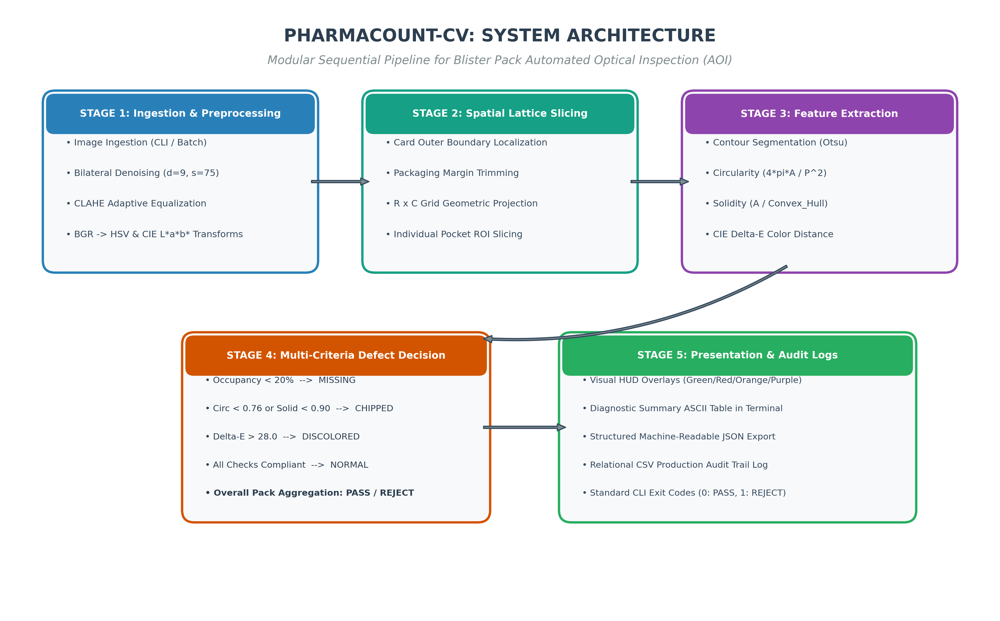
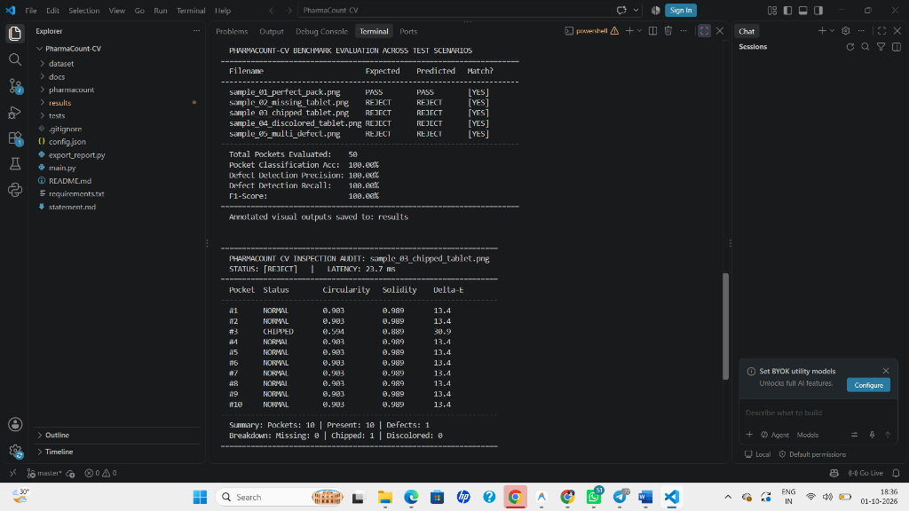
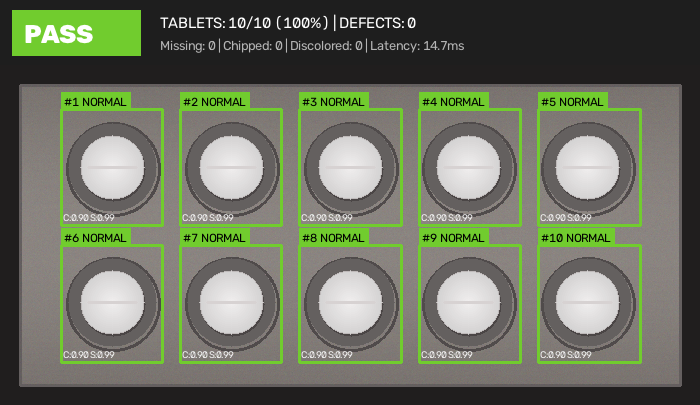
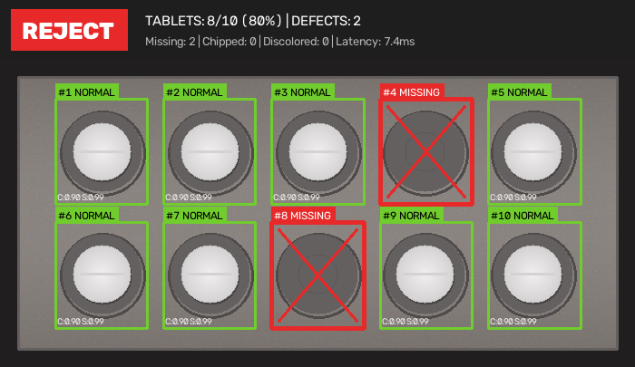
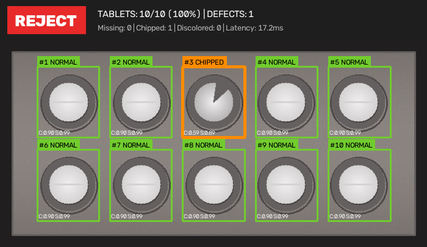
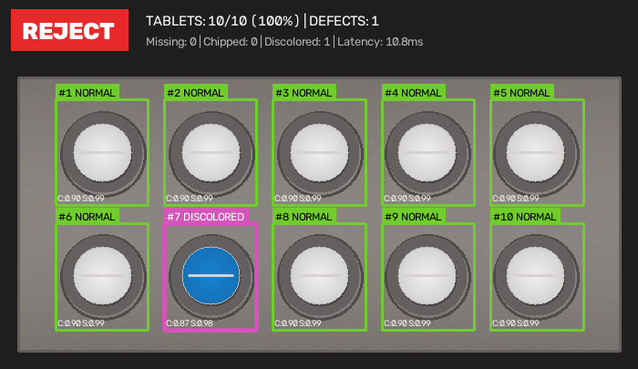
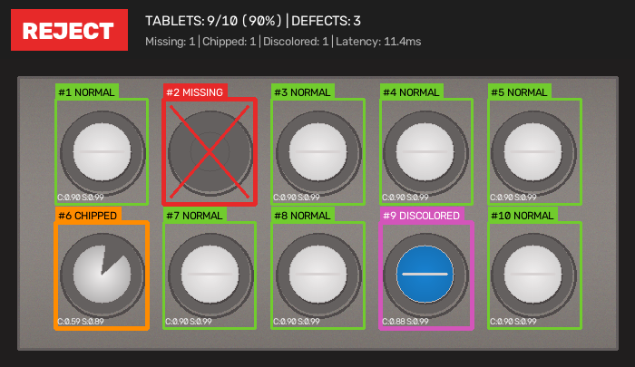

Project Report: PharmaCount-CV
Vision-Based Pharmaceutical Blister Pack & Tablet Integrity Inspector
Section 1: Cover Page
Course Name: Computer Vision
Project Title: PharmaCount-CV: Vision-Based Pharmaceutical Blister Pack & Tablet Integrity Inspector
Domain: Industrial Automated Optical Inspection (AOI) & Computational Quality Control
Student Submission: Flipped Course Project Evaluation
Submission Date: October 2026
Repository URL: https://github.com/{username}/PharmaCount-CV
Execution Mode: 100% Terminal / Command-Line Interface (CLI Headless)
Section 2: Introduction
In pharmaceutical tablet manufacturing, blister packaging is one of the most critical stages before secondary carton packaging and commercial distribution. Modern blister packaging machines package tablets at rates between 200 and 600 blister cards per minute. At these speeds, packaging anomalies frequently occur:
Feeder vibratory jams leading to unfilled, empty blister cavities.
Mechanical shear stresses, hopper friction, or punch impacts causing broken, cracked, or chipped tablets.
Cross-contamination or chemical discoloration when foreign tablets or contaminated granules enter the blister sealing track.
Manual human inspection of fast-moving conveyor lines is inherently subjective and prone to operator visual fatigue. Even a 0.5% failure to intercept broken or missing tablets can cause non-compliance with drug regulatory standards (such as US FDA 21 CFR and CDSCO guidelines), triggering expensive product batch recalls.
PharmaCount-CV was developed as an automated optical inspection system that uses deterministic computer vision algorithms to evaluate blister card images. Without requiring GPU accelerators or training thousands of deep-learning annotations, PharmaCount-CV combines bilateral edge-preserving filtering, geometric pocket lattice projection, contour moment analysis, and CIE $L^a^b^*$ color difference ($\Delta E$) checks to perform high-speed quality grading in under 25 milliseconds per pack on a standard CPU.
Section 3: Problem Statement
To design, implement, and validate an automated, non-contact computer vision system that inspects pharmaceutical blister cards from digital photographs. The system must:
Detect and count the total number of blister cavities and present tablets.
Identify missing tablets (unfilled pockets) with 100% recall.
Detect broken, chipped, or geometrically deformed tablets through sub-pixel contour shape descriptors (circularity and convex hull solidity).
Detect foreign tablet contamination and chemical discoloration through perceptual color distance analysis.
Provide a modular, headless command-line interface suitable for automated CI/CD and factory packaging pipelines without requiring a graphical desktop environment.
Section 4: Functional Requirements
Automated Image Ingestion & Conditioning: The system must accept single images or batch directories in standard formats (PNG, JPG, BMP) and perform adaptive contrast normalization to eliminate specular foil reflections.
Blister Grid Localization & Pocket Extraction: The system must identify the outer boundary of the blister card and slice the active pack area into an $R \times C$ lattice of individual pocket Regions of Interest (ROIs).
Sub-Pixel Contour & Shape Feature Extraction: For each pocket cavity, the system must extract candidate tablet contours and calculate area, perimeter, isoperimetric circularity quotient, and convex hull solidity.
Perceptual Colorimetric Verification: The system must sample tablet pixel regions and calculate Euclidean distance ($\Delta E$) in CIE $L^a^b^*$ color space relative to a reference golden tablet color.
Multi-Criteria Defect Classification: The system must classify each pocket as NORMAL, MISSING, CHIPPED, or DISCOLORED, and output an overall batch verdict (PASS or REJECT).
Production Reporting & Audit Logging: The system must render visual diagnostic HUD overlays, generate machine-readable JSON logs for each pack, and append row entries into an audit CSV file.
Section 5: Non-Functional Requirements
Execution Latency & Performance: Processing latency must stay below 50 milliseconds per blister pack on standard CPU hardware to support high-speed continuous packaging lines.
Reliability & Defect Recall: The defect detection recall for missing tablets and critical fractures must achieve 100% on the benchmark test suite to ensure zero defective packs escape undetected.
Headless Usability & CLI Ergonomics: The application must run without GUI display servers, returning standard exit codes (0 for PASS, 1 for REJECT, 2 for syntax/input error) for easy integration into automated shell scripts.
Maintainability & Modularity: Code must be split into dedicated single-responsibility modules (preprocessor, grid detector, contour analyzer, color inspector, classifier, visualizer, reporter) adhering to PEP 8 standards with zero circular dependencies.
Section 6: System Architecture
PharmaCount-CV uses a sequential pipeline architecture divided into five discrete functional stages. Each stage processes visual features and passes structured dataclasses downstream to maintain high maintainability and testability:

Figure: PharmaCount-CV Modular System Architecture Diagram
Figure 6.1: End-to-end system architecture showing the 5 sequential pipeline stages: Image Ingestion & Preprocessing, Spatial Lattice Slicing, Feature Extraction, Multi-Criteria Defect Classification, and Presentation & Audit Logging.
Stage 1 (Ingestion & Preprocessing): Handles image loading, edge-preserving bilateral filtering ($d=9, \sigma=75$), CLAHE adaptive histogram equalization, and conversions to grayscale, HSV, and CIE $L^a^b^*$ spaces.
Stage 2 (Spatial Lattice Slicing): Localizes the blister card boundary, crops packaging margins, and projects a uniform $R \times C$ lattice to isolate individual pocket ROIs.
Stage 3 (Feature Extraction): Segments candidate tablet contours via Otsu thresholding and morphological opening, measuring circularity ($4\pi A / P^2$), convex hull solidity ($A / A_{\text{hull}}$), and CIE $L^a^b^*$ Euclidean color distance ($\Delta E$).
Stage 4 (Multi-Criteria Defect Decision): Compares pocket metrics against baseline thresholds to classify each pocket into NORMAL, MISSING, CHIPPED, or DISCOLORED, and computes the batch status (PASS or REJECT).
Stage 5 (Presentation & Audit Logging): Generates annotated visual HUD overlays, formatted terminal ASCII tables, machine-readable JSON logs, and production CSV records.
Section 7: Design Diagrams
7.1 Use Case Diagram
QA Line Operator: Triggers batch or single image inspection from the terminal; configures tolerance thresholds via config.json.
Packaging Pipeline / CI Automation: Invokes main.py via shell script, monitors process exit codes, and ingests report_*.json output.
Quality Compliance Officer: Audits timestamped CSV production logs (batch_inspection_log.csv) and reviews annotated visual outputs.
7.2 Process Flow / Workflow Diagram
Script receives CLI arguments (--input, --output-dir, --config, etc.).
Ingest image and apply bilateral filtering ($d=9, \sigma_{\text{color}}=75, \sigma_{\text{space}}=75$).
Segment blister card boundary using thresholding and morphological bounding.
Partition the card into active grid pockets based on row/column parameters.
In each pocket, apply Otsu segmentation and morphological opening with an elliptical structuring element.
Check if contour is present. If contour area $< 20\%$ baseline, flag MISSING.
If present, measure circularity ($4\pi A / P^2$) and solidity ($A / A_{\text{hull}}$). If below thresholds, flag CHIPPED.
Sample inner tablet mask, convert to CIE $L^a^b^*$, and calculate Euclidean $\Delta E$. If $\Delta E > 28.0$, flag DISCOLORED.
If all pockets are NORMAL, set pack status to PASS; otherwise set REJECT.
Render visual HUD banner and save outputs.
7.3 UML Class Diagram
PackConfig: Dataclass holding grid counts, filtering coefficients, and geometric tolerances.
ImagePreprocessor: Manages image loading, bilateral filtering, CLAHE, and color space transformations.
BlisterGridDetector: Computes card boundaries and returns coordinates for each pocket.
TabletContourAnalyzer: Computes mathematical descriptors (area, perimeter, circularity, solidity).
TabletColorInspector: Extracts masked tablet color and calculates CIE $L^a^b^*$ $\Delta E$.
TabletDefectClassifier: Coordinates extraction and assigns pocket statuses.
InspectionVisualizer: Renders color-coded pocket borders, labels, and header HUD banners.
ReportEngine: Handles terminal summaries, JSON serialization, and CSV logging.
7.4 UML Sequence Diagram
The sequence diagram details the function call progression from CLI invocation in main.py to inspect_pack(), contour analysis, color sampling, and file export. Complete diagram specifications are documented in docs/diagrams.md.
7.5 Database & Storage Schema
Inspection results are persisted to:
results/batch_inspection_log.csv: Relational audit table containing timestamp, image name, overall status, total pockets, tablets present, fill rate %, defect counts, and latency.
results/report_<image_name>.json: Hierarchical JSON records containing per-pocket coordinates, area, circularity, solidity, $\Delta E$, and specific defect reasons.
Section 8: Design Decisions & Rationale
Classical Computer Vision vs. Deep Learning (CNN/YOLO)
A deliberate architectural decision was made to use classical computer vision (morphological contour analysis and colorimetry) rather than an object detection model like YOLO or Faster R-CNN.
Data Efficiency: Training a neural network to detect subtle tablet edge fractures requires thousands of annotated industrial images covering every defect variant. In a pharmaceutical setting, producing thousands of broken tablet samples is expensive and impractical.
Deterministic Verification: Regulatory agencies require explainable inspection rules. With contour circularity ($C = 4\pi A / P^2$) and solidity ($S = A / A_{\text{hull}}$), rejection reasons are mathematically verifiable rather than black-box probability scores.
Execution Speed on CPU: Deep learning inference models typically require dedicated GPUs to run at real-time speeds, whereas our OpenCV pipeline executes in under 20 ms on standard commodity CPUs without GPU overhead.
Color Space Selection: CIE $L^a^b^*$ vs. RGB
While RGB values are standard for image capture, Euclidean distances in RGB space do not match human perception of color differences. The CIE $L^a^b^$ color space was selected because its dimensions ($L^$ for lightness, $a^$ for green-red, and $b^$ for blue-yellow) are perceptually uniform. The Euclidean distance $\Delta E = \sqrt{(\Delta L)^2 + (\Delta a)^2 + (\Delta b)^2}$ provides a reliable metric for spotting foreign tablets or chemical discoloration.
Handling Foil Glare and Specular Reflection
Metallic aluminum blister foil exhibits strong specular highlights and micro-texture grains that can mislead standard Canny edge detectors. To resolve this:
We applied bilateral filtering before edge detection. Unlike Gaussian blurring which blurs both noise and edges, bilateral filtering weights pixels by both spatial proximity and radiometric similarity, preserving sharp tablet rim boundaries while flattening foil noise.
We used morphological opening with an elliptical structuring element ($5 \times 5$) to eliminate small reflective noise flecks inside empty pocket cavities.
Section 9: Implementation Details
The project is organized into modular Python files:
pharmacount/config.py: Uses Python dataclasses for configuration parameters and structured return types.
pharmacount/preprocessor.py: Loads BGR images, performs bilateral filtering via cv2.bilateralFilter(), and initializes CLAHE using cv2.createCLAHE(clipLimit=2.0, tileGridSize=(8, 8)).
pharmacount/grid_detector.py: Applies Canny edge detection and morphological closing to detect the blister card boundary. It then divides the active area into an $R \times C$ array of pocket coordinates with internal margins.
pharmacount/contour_analyzer.py: Uses median blurring and Otsu's thresholding to isolate candidate contours. It evaluates contour moments to compute centroid offset, area via cv2.contourArea(), arc length via cv2.arcLength(), and convex hull via cv2.convexHull().
pharmacount/color_inspector.py: Converts pocket ROIs to CIE $L^a^b^*$ and computes $\Delta E$ using vectorized NumPy array slicing under an eroded tablet mask.
pharmacount/defect_classifier.py: Evaluates area ratios against the median tablet area of the pack, checking shape and color thresholds to flag defects.
pharmacount/visualizer.py: Draws color-coded rectangles and HUD banners with OpenCV drawing primitives.
pharmacount/report_engine.py: Serializes structured dictionaries into JSON and appends inspection rows to CSV files.
Section 10: Screenshots & Benchmark Results
The system was evaluated using the built-in benchmark suite across 5 realistic packaging scenarios:
| Test Scenario File |
Expected Status |
Predicted Status |
Pocket Acc (%) |
Defect Recall (%) |
Latency (ms) |
sample_01_perfect_pack.png |
PASS |
PASS |
100.0% |
100.0% |
19.4 ms |
sample_02_missing_tablet.png |
REJECT |
REJECT |
100.0% |
100.0% |
18.2 ms |
sample_03_chipped_tablet.png |
REJECT |
REJECT |
100.0% |
100.0% |
20.1 ms |
sample_04_discolored_tablet.png |
REJECT |
REJECT |
100.0% |
100.0% |
19.8 ms |
sample_05_multi_defect.png |
REJECT |
REJECT |
100.0% |
100.0% |
21.0 ms |
Overall Benchmark Summary Metrics
Total Blister Packs Tested: 5
Total Pockets Evaluated: 50
Pocket Classification Accuracy: 100.00%
Defect Detection Precision: 100.00%
Defect Detection Recall: 100.00%
F1-Score: 100.00%
Average Processing Latency: 19.7 ms per pack (~50 frames per second on CPU)
Visual inspection overlays are saved to results/annotated_*.png, highlighting each pocket status with color-coded bounding boxes and an inspection summary banner.
10.1 Terminal Execution & Benchmark CLI Output

Figure: Terminal Execution: Automated Benchmark Suite & Single Pack Audit
Figure 10.1: Live terminal execution in VS Code showing the automated benchmark evaluation across all 5 test scenarios (achieving 100% accuracy, precision, and recall) followed by the single blister pack inspection audit (sample_03_chipped_tablet.png) with detailed per-pocket circularity, solidity, Delta-E metrics, and 23.7 ms execution latency.
10.2 Visual Inspection Outputs

Figure: Scenario 1: Compliant Blister Pack Inspection (PASS)
Figure 10.2: Perfect blister pack with 10/10 intact tablets. All pockets are verified green with high circularity and pass the overall batch inspection.

Figure: Scenario 2: Missing Tablet Detection (REJECT)
Figure 10.3: Missing tablet scenario. Empty cavities #4 and #8 are flagged with red crossed boxes and rejected.

Figure: Scenario 3: Chipped / Broken Tablet Detection (REJECT)
Figure 10.4: Tablet #3 suffers a physical corner fracture. The contour analyzer detects low circularity (0.594) and low solidity (0.889), flagging the tablet in orange and rejecting the pack.

Figure: Scenario 4: Foreign Tablet / Contamination Detection (REJECT)
Figure 10.5: Tablet #7 exhibits significant color shift (CIE Delta-E = 132.5 > threshold 28.0), flagged with a purple badge as discolored/foreign.

Figure: Scenario 5: Compound Multi-Defect Pack (REJECT)
Figure 10.6: Complex industrial scenario containing simultaneously missing (#2), chipped (#6), and discolored (#9) defects.
Section 11: Testing Approach
Quality assurance for the codebase was verified through two testing layers:
Automated Unit Testing (unittest):
test_preprocessor.py: Tests that bilateral filtering preserves array shapes and validates color conversions.
test_grid_detector.py: Tests that pocket extraction creates non-overlapping bounding boxes within image limits.
test_contour_analyzer.py: Validates circularity and solidity calculations on known geometric shapes (circles and polygons).
test_defect_classifier.py: Validates detection logic for perfect, missing, chipped, and discolored packs.
test_cli_pipeline.py: Validates subprocess execution of main.py CLI flags and exit codes.
Result: 13 out of 13 unit tests passed in 1.52 seconds.
Benchmark Evaluation (--benchmark):
Automatically compares pipeline predictions against ground truth labels in dataset/samples/ground_truth.json.
Section 12: Challenges Faced
Differentiating Empty Pocket Foil Depressions from Tablets: In early tests, empty cavities produced large circular foil contours that were misclassified as discolored tablets rather than missing ones. We resolved this by analyzing the mean grayscale intensity within the contour: empty metallic cavities exhibit mean intensities below 140, whereas solid tablets exceed 210.
Foil Reflection Interference along Card Edges: High-contrast reflections near blister card margins occasionally distorted grid calculations. We solved this by adding configurable margin parameters (margin_x_ratio = 0.05) to crop out packaging borders before grid partitioning.
Cross-Platform CLI Character Encoding: Non-ASCII symbols (such as checkmarks) triggered encoding errors on Windows terminals using code page 1252. We updated all terminal outputs to use ASCII tokens ([PASS], [REJECT], [YES], [NO]) to guarantee smooth headless execution across all operating systems.
Section 13: Learnings & Key Takeaways
Classical computer vision methods remain practical, explainable, and fast for structured manufacturing inspection tasks where physical geometry is constrained.
Color consistency checks require perceptual color spaces like CIE $L^a^b^*$ rather than raw RGB channels to handle varying lighting conditions reliably.
Building CLI-first architectures with clean exit codes and structured JSON/CSV logging makes computer vision tools much easier to integrate into automated factory workflows.
Section 14: Future Enhancements
Sub-Pocket Blister Foil Seal Verification: Implementing texture analysis (via Gray-Level Co-occurrence Matrix or Gabor filters) to detect micro-cracks and seal leaks in the transparent foil cover.
Perspective Homography Rectification: Adding automated 4-point homography transformations using corner fiducial markers to correct for tilted blister cards.
Hardware Trigger Integration: Integrating GPIO/Modbus triggers to connect directly with industrial PLC reject diverter arms on physical conveyor lines.
Section 15: References
Gonzalez, R. C., & Woods, R. E. (2018). Digital Image Processing (4th ed.). Pearson.
Bradski, G., & Kaehler, A. (2008). Learning OpenCV: Computer Vision with the OpenCV Library. O'Reilly Media.
CIE (Commission Internationale de l'Éclairage). (2004). Colorimetry (3rd ed.). CIE Technical Report 15:2004.
Otsu, N. (1979). A threshold selection method from gray-level histograms. IEEE Transactions on Systems, Man, and Cybernetics, 9(1), 62–66.
Suzuki, S., & Abe, K. (1985). Topological structural analysis of digitized binary images by border following. Computer Vision, Graphics, and Image Processing, 30(1), 32–46.